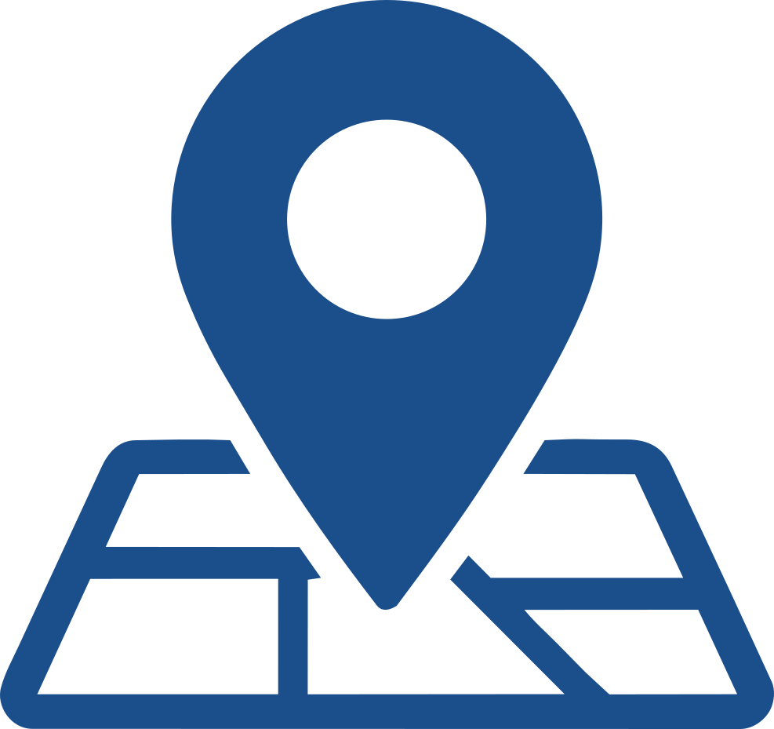

Rikke René Thastum
Civilingeniør i robotteknologi · cand.polyt. i robotteknologi

5220 Odense SØ- +45 50 56 17 03
- r.thastum@gmail.com
- 1997
Om mig About me
Jeg er en 29-årig civilingeniør i robotteknologi fra SDU med en praktisk, kreativ og tværfaglig tilgang til udvikling. Jeg arbejder engageret, struktureret og samarbejdsorienteret og er altid klar på nye udfordringer. I min fritid dyrker jeg mange kreative hobbyer, som afspejler min nysgerrighed og glæde ved at skabe.
I am a 29-year-old robotics engineer from SDU with a practical, creative and interdisciplinary approach to development. I work with commitment, structure and a collaborative mindset, and I am always ready for new challenges. In my spare time, I pursue many creative hobbies that reflect my curiosity and enjoyment of creating.
Uddannelse
Gennem bachelor- og kandidatuddannelsen har jeg opnået en bred og specialiseret teknisk viden inden for robotteknologi, automation, autonome systemer og kunstig intelligens. Jeg har arbejdet med blandt andet programmering, elektronik, computer vision, indlejrede systemer og 3D-modellering samt udvikling af løsninger, hvor software og hardware integreres i praksis. Uddannelsens alsidige og tværfaglige karakter har givet mig en bred teknisk forståelse og styrket min evne til hurtigt at sætte mig ind i nye teknologier, tilpasse mig forskellige problemstillinger og tilegne mig ny viden. Uddannelsen har desuden haft et stærkt projektbaseret fokus, hvor vi hvert semester har arbejdet i teams med større tekniske projekter – fra idé og analyse til udvikling, test og præsentation.
Uddannelsen har givet mig en bred og specialiseret teknisk forståelse inden for robotteknologi, automation, autonome systemer og kunstig intelligens. Gennem tværfaglige semesterprojekter har jeg udviklet og integreret software- og hardwareløsninger fra idé og analyse til test og præsentation. The programmes have given me a broad and specialised technical understanding of robotics, automation, autonomous systems and artificial intelligence. Through interdisciplinary semester projects, I have developed and integrated software and hardware solutions from concept and analysis to testing and presentation. Faglige nøgleord